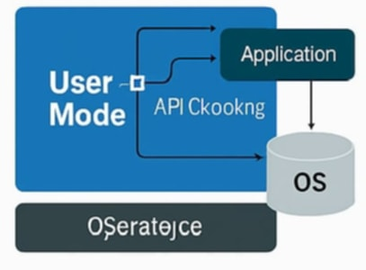
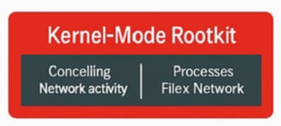

User-Mode Rootkits
User-mode rootkits hook into application-level APIs or libraries to intercept calls and hide malicious behavior. They are easier to develop but less powerful than kernel-mode kits.
- Injection points: DLLs, shared libraries, and application processes.
- Techniques: API hooking, function overwriting, in-memory patching.
- Advantages: Lower complexity, no kernel exploits required.
- Limitations: Bound by user privileges; can be detected by integrity checks.


Kernel-Mode Rootkits
Kernel-mode rootkits operate with the highest privileges, modifying the kernel itself or its modules to conceal their presence. They are harder to detect and remove but also more complex to build.
- Installation: Via vulnerable drivers, bootkit chains, or kernel exploits.
- Techniques: System call table hooking, inline kernel patching, rootkit modules.
- Advantages: Deep concealment, can hide processes and network activity.
- Challenges: Kernel updates can break functionality; requires low-level expertise.